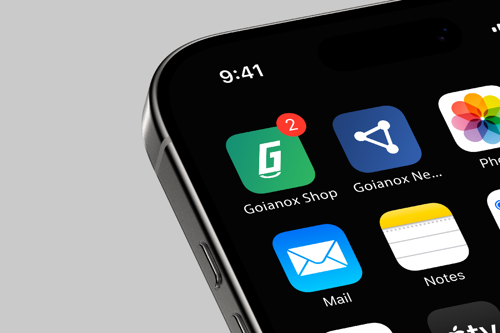
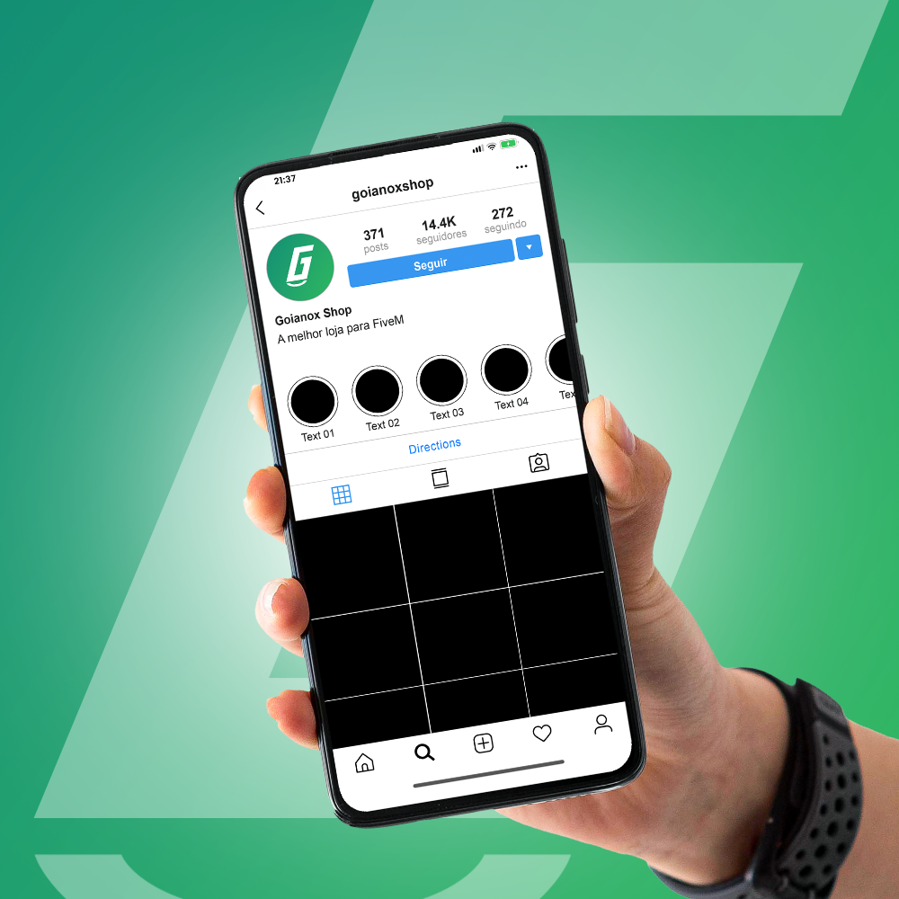
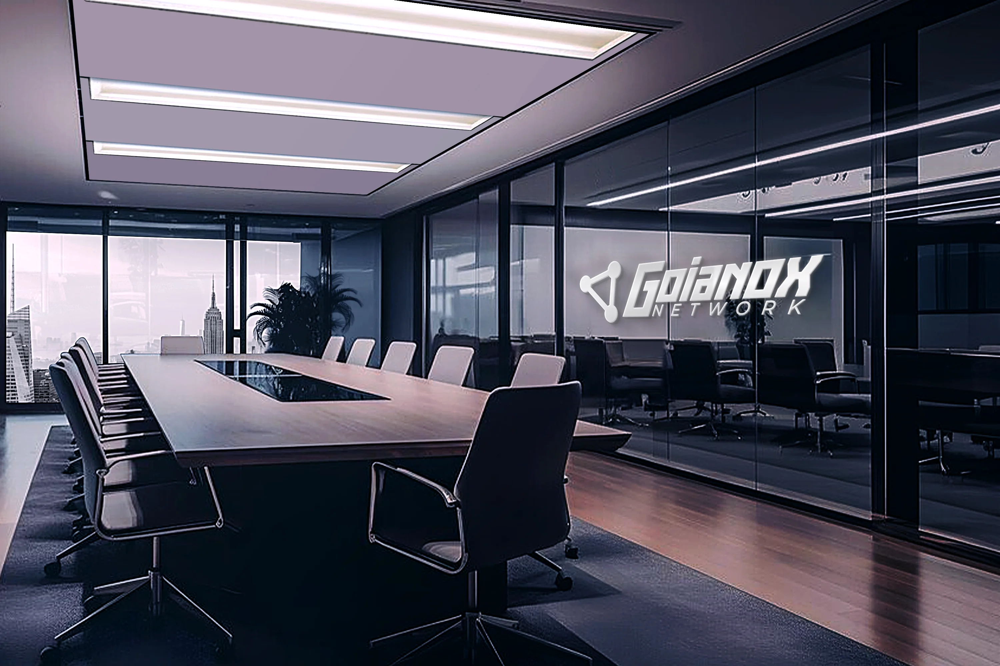
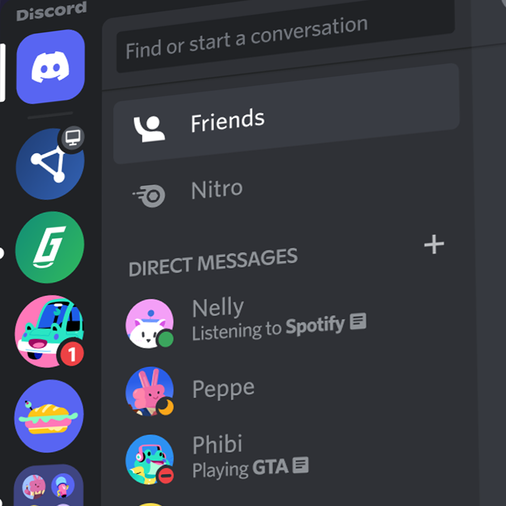
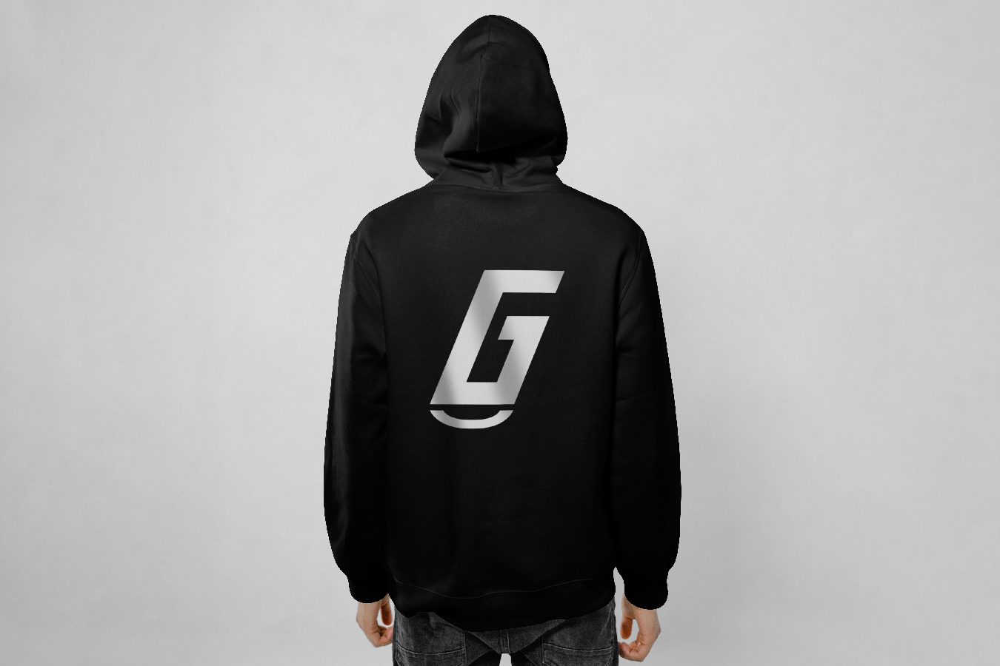

Proposta de Identidade Visual
Duas marcas, uma identidade coesa. Construída para o universo FiveM com decisões que têm razão de ser.
Universo Goianox
Quando você trouxe o projeto, o pedido era criar uma identidade para a loja. Mas ao entender como a operação funciona, ficou claro que havia dois contextos completamente diferentes convivendo sob o mesmo nome. Separar e nomear cada frente foi a primeira decisão do projeto, e a mais importante.
Goianox Shop
A vitrine da operação. Toda a identidade foi construída para falar diretamente com quem compra scripts, mapas, mods e assets FiveM. Quem entra na Shop já sabe o que vai encontrar, sem precisar de explicação.
Goianox Network
A identidade institucional. É o nome que representa a Goianox como organização, não como ponto de venda. Voltado para canais oficiais, presença digital e o posicionamento de longo prazo da marca no ecossistema FiveM.
Decisão de Naming
Vocabulário nativo do gamer
"Shop" é a palavra que qualquer pessoa do universo FiveM reconhece de imediato, sem contexto adicional. Lojas de scripts, mapas e mods já operam com esse termo nativamente. O nome trabalha por conta própria antes mesmo de o cliente ver o logo.
Clareza imediata
Quando alguém chega pela primeira vez, "Shop" entrega a função sem esforço. "Network" como nome de loja cria ruído, remete a servidor ou comunidade. Com "Shop", o cliente sabe o que é, o que encontra e o que pode comprar.
Network ficou para o servidor
Separar os nomes foi uma decisão estratégica, não estética. Network representa a identidade institucional da operação. Shop é o braço comercial, o e-commerce. Cada nome faz seu trabalho sem invadir o espaço do outro.
Resumindo
Shop vende.
Network conecta.
Dois nomes. Duas funções. Um ecossistema que cresce com clareza, sem conflito de posicionamento entre as frentes da operação.
Identidade Principal
O Símbolo
O arco abaixo do logotipo é a curva de crescimento, e também um sorriso. Ele comunica leveza na experiência de compra, satisfação na entrega e uma relação de confiança com o cliente. Uma promessa visual simples, direta e humana.
Paleta de Cores
Verde Profundo
#149173
Verde Vibrante
#2DB460
Branco
#FFFFFF
Verde profundo ancora a solidez da marca. Verde vibrante traz a energia de uma operação em movimento. Juntos, formam o gradiente do crescimento que a Goianox Shop representa.
O verde também é a cor do universo gamer por excelência: barras de vida, interfaces HUD, menus FiveM. Para o público da loja, é uma linguagem visual já internalizada. Ver esse verde é sentir que está no lugar certo.
Marca Secundária
O Símbolo
Os três nós conectados em triângulo representam jogadores, servidores e comunidade. Nenhum ponto existe sozinho: cada conexão fortalece o conjunto. A topologia da rede virou o símbolo da marca. Distribuída, resiliente e sempre ativa.
Proposta da Marca
Network carrega o peso institucional da operação. É o nome que representa a Goianox como organização, não como ponto de venda. O azul comunica precisão, credibilidade e a solidez que uma referência no segmento FiveM precisa transmitir.
Paleta de Cores
Azul Âncora
#21417A
Azul Ativo
#2563AE
Branco
#FFFFFF
Azul âncora estabelece autoridade e profundidade. Azul ativo abre espaço para dinamismo e presença digital. Juntos, comunicam uma operação séria e técnica sem perder modernidade.
Sistema Tipográfico
Duas fontes escolhidas com intenção. Uma para declarar identidade — a outra para sustentar cada interface, botão e chamada da operação.
Tupa Trial Italic
Display · Identificação da Marca
Batizada em homenagem a Tupã — o espírito tupi-guarani do trovão, o som que anuncia presença antes de chegar. Na identidade Goianox, Tupa é a voz que lidera: intensa, inclinada por natureza, construída para ser reconhecida antes mesmo de ser lida.
Montserrat
Sans-serif · Interface & Corpo de Texto
Nomeada pelo bairro histórico de Montserrat em Buenos Aires, onde o modernismo geométrico se misturou com a cultura urbana de rua. Na Goianox, Montserrat sustenta: legível em qualquer tamanho, confortável em qualquer contexto — a voz por trás de cada interface da operação.
Aplicações da Marca
Uma identidade só é sólida quando funciona em qualquer superfície. Aqui estão as versões de cada marca adaptadas para fundos escuros, claros e monocromáticos.
Shop
Network
Aplicações
A identidade saindo do papel. Aplicada a formatos digitais e físicos que a Goianox vai usar no dia a dia.





Proposta entregue
Duas marcas. Uma identidade coesa.
Cada decisão aqui tem uma razão de ser.